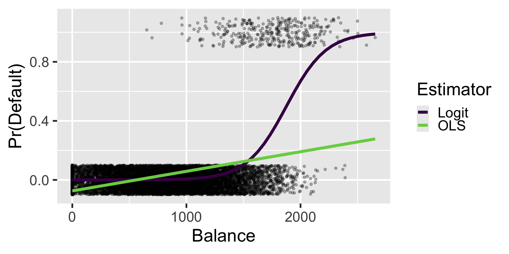

Parametric Models
POLI_SCI 403: Probability and Statistics
Agenda
- Main idea
- Parametric regression
- Binary choice models (logistic regression)
- Maximum likelihood estimation
- Lab
Parametric Models
So far
Agnostic statistics approach: Assume only what can be gleaned from data
No need to make distributional assumptions, only i.i.d. process
Meaning our approach is non-parametric
Alternative: Parametric models
What does “parametric” mean?
Parametric: Assume full functional form with finite number of parameters
Nonparametric: Assume functional form is unknown, possibly infinite number of parameters
Semiparametric: ¯\(ツ)/¯
Ingredients of a parametric model
- Set of functions \(g\)
- Indexed by parameter vector \(\theta\)
- Model is true for every \(\theta\) if…
- \(f_{Y|X}(y|x) = g(y,x; \theta)\)
We assume there exists a function \(g\) with parameters \(\theta\)
If you know \(\theta\), then you can fully characterize the PMF/PDF of \(Y\) given \(X\)
Then we can say \(\theta\) is a sufficient statistic
Toy example: Biased coin flip
\[ f_Y(y) = g(y;p) = \begin{cases} 1-p &:& y = 0\\ p &:& y=1\\ 0 &:& \text{otherwise.} \end{cases} \]
- \(\theta = p\)
- If you know \(p\), then you fully know the distribution of random variable \(Y\)
Regression
again
Classical linear model
\[ Y = \boldsymbol{X \beta} + \varepsilon \]
- \(Y\): Response (Outcome)
- \(X\): Matrix of predictors (explanatory variables)
- \(\boldsymbol{\beta} = (\beta_0, \beta_1, \ldots, \beta_K)^T\) Vector of coefficients
- \(\varepsilon \sim N(0, \sigma^2)\) Errors (residuals) i.i.d. normal with expectation zero
If you know \(\boldsymbol{\beta}\) and \(\sigma^2\), then you can fully characterize the PMF/PDF of \(Y\) given \(X\)
Why do we need \(\varepsilon \sim N(0, \sigma^2)\)?
- \(\boldsymbol{\beta}\) represents the variation in \(Y\) that comes from predictors \(\boldsymbol{X}\)
- \(\varepsilon\) represents variation in \(Y\) that cannot be attributed to \(\boldsymbol{X}\)
- If errors are i.i.d. then they are also independent of \(\boldsymbol{X}\)
- We need this so that our estimator is unbiased by definition
\[ Y = \beta_0 + \beta_1 X_1 + \varepsilon \]
\[ Y = \beta_0 + \beta_1 X_1 + \color{purple}{\beta_2 X_2} + \varepsilon \]
Binary Choice Models
Logistic regression
Parametric model
\[ g(y, \boldsymbol{X}; \beta) = \begin{cases} 1-h(\boldsymbol{X\beta}) &:& y = 0\\ h(\boldsymbol{X\beta}) &:& y = 1 \\ 0 &:& \text{otherwise.} \end{cases} \]
Let \(h(\boldsymbol{X\beta}) = Pr(Y = 1 | X) = p(X)\) for simplicity
Logistic regression
Parametric model
\[ g(y, \boldsymbol{X}; \beta) = \begin{cases} 1-h(\boldsymbol{X\beta}) &:& y = 0\\ h(\boldsymbol{X\beta}) &:& y = 1 \\ 0 &:& \text{otherwise.} \end{cases} \]
Logistic regression
Parametric model
\[ g(y, \boldsymbol{X}; \beta) = \begin{cases} 1-p(X) &:& y = 0\\ p(X) &:& y = 1 \\ 0 &:& \text{otherwise.} \end{cases} \]
- \(\boldsymbol{\beta} = (\beta_0, \beta_1, \ldots, \beta_K)^T\)
- \(p(X)\) or \(h(\boldsymbol{X\beta})\) is the mean or link function
- We need the link to bound \(y\) in the \([0,1]\) range
Logistic regression
For the logit model, the link is the logistic function
\[ p(X) = \frac{e^{X\beta}}{1+e^{X\beta}} \]
Logistic regression
For the logit model, the link is the logistic function
\[ p(X) = \frac{e^{X\beta}}{1+e^{X\beta}} \]
Rearrange to get the odds ratio
\[ \frac{p(X)}{1-p(X)} = e^{{X\beta}} \]
Logistic regression
Taking the natural logarithm gives the log odds
\[ log \left (\frac{p(X)}{1-p(X)} \right) = X\beta \]
- Weird to interpret, easy to estimate
- It’s called logit because you need to log it to make it easier to estimate
- How do we estimate?
Maximum likelihood estimation (MLE)
- Knowing \(\theta\) is enough to characterize conditional PMF of \(Y\) given \(X\)
- But we do not know \(\theta\)! We only know the data we observe
- We can try many different values for \(\theta\) and see what sticks
- Trick: Find \(\theta\) that would have maximized the probability of obtaining the data we observe
- Restated: Find parameters that would have made outcomes as likely as possible
Example: Which line makes observed data more likely?

More formally
Likelihood function \(\mathcal{L}(t|Y, \boldsymbol{X})\)
Maximum likelihood estimator
\[ \widehat{\theta}_{ML} = \underset{t\in\Theta}{\text{argmax}}\mathcal{L}(t|Y, \boldsymbol{X}) = \underset{t\in\Theta}{\text{argmax}} \prod_{i=1}^n\mathcal{L}(t|Y_i, \boldsymbol{X_i}) \]
Products are hard, maximize log-likelihood instead
\[ \widehat{\theta}_{ML} = \underset{t\in\Theta}{\text{argmax}}[\text{log}\mathcal{L}(t|Y, \boldsymbol{X})] = \underset{t\in\Theta}{\text{argmax}} \sum_{i=1}^n\text{log}\mathcal{L}(t|Y_i, \boldsymbol{X_i}) \]
Another way to look at it
How do you find the maximum likehihood?
Analytically
Take the derivative of \(\text{log}\mathcal{L}(\theta|Y, X)\) w.r.t. \(\theta\)
Set to \(0\), solve for \(\theta\) and label it \(\widehat \theta\) (if possible)
Check if second derivative is negative (so it is maximum not minimum)
How do you find the maximum likehihood?
Numerically
Computer will do it for you
Use optimization algorithm to find maxima (if any)
Computationally intensive to write on your own
Most MLE methods have fast pre-packaged functions
Rule of thumb: If the algorithm takes too long, don’t believe the result!
With data
default student balance income
1 No No 729.5265 44361.625
2 No Yes 817.1804 12106.135
3 No No 1073.5492 31767.139
4 No No 529.2506 35704.494
5 No No 785.6559 38463.496
6 No Yes 919.5885 7491.559Estimation
Estimation
Linear probability model
ols = lm(default01 ~ student + balance + income, data = Default)
coef(ols) %>% round(5) # easier to read(Intercept) studentYes balance income
-0.08118 -0.01033 0.00013 0.00000 Logit model
Logit coefficients are expressed in log-odds
Convert to probabilities
Why so different?

library(marginaleffects)
# Extract predictions
p_ols = plot_predictions(ols,
condition = "balance",
draw = FALSE)
p_log = plot_predictions(logit,
condition = "balance",
draw = FALSE)
# Combine and label
pred_df = bind_rows(
p_ols %>% mutate(Estimator = "OLS"),
p_log %>% mutate(Estimator = "Logit")
)
# Visualize
ggplot(Default) +
aes(x = balance, y = default01) +
geom_jitter(alpha = 0.3, height = 0.1) +
geom_line(
data = pred_df,
aes(x = balance,
y = estimate,
color = Estimator),
linewidth = 2) +
scale_color_viridis_d(begin = 0, end = 0.8) +
labs(x = "Balance",
y = "Pr(Default)")Why would you want to do this?
Critique: You can reverse engineer MLE so that your preferred parameters are optimal
Achen (2002, ARPS): Stop making up new parametric models!
Or, rather, motivate your parametric models with well-laid out formal model
So you get as close as possible to the microfoundations
Microfoundations: Explaining macro-level phenomena by modeling the behavior of individual agents
MLE finite sample properties
We said OLS was BLUE
MLE find the MVUE instead
MLE finite sample properties
- Minimum
MLE finite sample properties
- Minimum Variance
MLE finite sample properties
- Minimum Variance Unbiased
MLE finite sample properties
- Minimum Variance Unbiased Estimator (MVUE)
- Unbiased: \(E[\widehat \theta] = \theta\)
- Minimum variance: Efficiency
IF there is a MVUE, ML will find it
If not, it can still find something good enough
MLE finite sample properties
- Minimum Variance Unbiased Estimator (MVUE)
- Invariance to Reparameterization
- If \(\widehat \theta\) is the MLE of \(\theta\), then for any function \(f(\theta)\) its MLE is \(f(\widehat \theta)\)
- Example: \(\widehat \sigma\) is the MLE of \(\sigma\), \(\widehat \sigma^2\) is the MLE of \(\sigma^2\)
- Not true for other modes of inference!
MLE finite sample properties
Minimum Variance Unbiased Estimator (MVUE)
Invariance to Reparameterization
- Invariance to sampling plans
- We are making not relyng on i.i.d. sampling to connect \(\theta\) and \(\widehat \theta\)
- So collecting more data after looking at results is perfectly fine!
MLE finite sample properties
Minimum Variance Unbiased Estimator (MVUE)
Invariance to Reparameterization
Invariance to sampling plans
Asymptotic properties
- Consistency: WLLN implies that as $ n $, the sampling distribution of the MLE collapses to a spike over the parameter value
- Asymptotic normality: CLT implies that as \(n \rightarrow \infty\), the distribution of the standardized MLE converges to \(N(0,1)\)
- Asymptotic efficiency: Because MLE is a sufficient statistic by definition
What about inference?
Short answer: Normal-approximation standard errors/CIs/p-values are fine because asymptotic normality usually holds
Long answer:
You can conduct inference via likelihood-ratio tests of between parameters of interest
But too much work to test all points of interest
AM: Don’t take your models too seriously! Ok to be agnostic and compute robust/bootstrapped standard errors (more in the lab)
Wrapping up
Parametric models as alternative way to think about inference
Makes more sense when i.i.d. is (really truly) untenable, but requires careful justification
Estimated via MLE (alternative is method of moments)
Many different opinions on how to deal with uncertainty
Most people who prefer the model-based approach rely more on Bayesian statistics than MLE
Overfitting, micronumerosity, etc. are still problems here